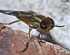

chrysops

Has synonym(s): deer-fly
Definition: Chrysopsinae is an insect subfamily in the family Tabanidae commonly known as deer flies or sheep flies and are bloodsucking insects considered pests to humans and cattle. They are large flies with large brightly-coloured compound eyes, and large clear wings with dark bands. They are larger than the common housefly and smaller than the horse-fly. Deer flies lay between 100 and 800 eggs in batches on vegetation near water or dampness. During the larval stage, which lasts one to three weeks, they feed on small creatures or rotting organic matter near or in the water. After a pupal stage, they emerge as adults in late spring and summer. While male deer flies collect pollen, female deer flies feed on blood, which they require to produce eggs. Females feed primarily on mammals. They are attracted to prey by sight, smell, or the detection of carbon dioxide. Other attractants are body heat, movement, dark colours, and lights in the night. They are active under direct sunshine and hours when the temperature is above 22 °C (71.6°). When feeding, the females use scissor-like mandibles and maxillae to make a cross-shaped incision and then lap up the blood. Their bite can be painful. Anti-coagulants in the saliva of the fly prevents blood from clotting and may cause severe allergic reactions. Parasites and diseases transmitted by the deer fly include tularemia, anthrax, anaplasmosis, equine infectious anemia, hog cholera, and filiariasis. DEET is not an effective repellent.Predators of the deer fly (and other Tabanidae) include nest-building wasps and hornets, dragonflies, and some birds, including the killdeer. Deer flies are difficult to control because insecticides cannot be applied in the sensitive wetlands where their larvae typically develop. Additionally, adults may have developed a significant distance from where the eggs were laid. Trapping devices and protective clothing, such as long-sleeved shirts and hats, can help avoid the annoyance and bites of aggressive deer flies.
Source: Wikipedia
Wikipedia Page (Something wrong with this association? Let us know.)
Wikidata Page (Something wrong with this association? Let us know.)